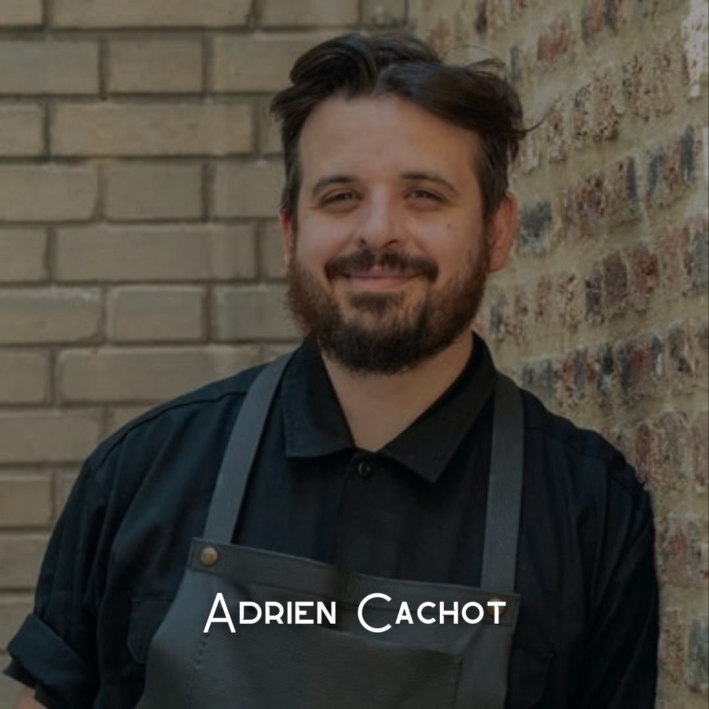

"Comme à la télé mais en mieux"
QUI SOMMES-NOUS ?
Bienvenue à La Brigade Top Chef, le restaurant inédit ouvert par M6 en collaboration avec d'anciens candidats emblématiques de l’émission ! Plongez dans l’univers de Top Chef en dégustant des plats iconiques qui ont marqué l’histoire du concours. Chaque recette, revisitée par des désormais grands noms de la cuisine française, allie créativité, audace et excellence gastronomique. Vivez une expérience immersive où chaque bouchée vous transporte dans l’intensité des épreuves culinaires. Une adresse d’exception où passion et haute cuisine se rencontrent !
NOS CHEFS
Mathias Marc a brillé par sa cuisine authentique et moderne, mêlant terroir jurassien et finesse gastronomique. Dans la brigade de Philippe Etchebest, il a impressionné par sa technique et son audace, proposant des assiettes élégantes et généreuses.Il aura notament marqué l'histoire du concours avec son plat "L'Apologie de l'excès" qualifié encore aujourd'hui comme l'un des meilleurs jamais réalisé !
Jeune chef talentueux et perfectionniste, Hugo Riboulet s’est illustré par sa maîtrise technique et son sens du détail. Membre de la brigade de Phillipe Etchebest, il a dominé la compétition avec constance et remporte la finale face à Danny Khezzar, affirmant son statut de grand espoir de la gastronomie.

Première femme à remporter Top Chef en 10 ans, Louise Bourrat a impressionné par sa cuisine intuitive et métissée, mêlant influences portugaises et françaises. Dans l’équipe d’Hélène Darroze, elle a su imposer son style et décroche la victoire, confirmant son ascension dans le monde de la gastronomie.
Icône de la saison 11, Adrien Cachot a révolutionné l’émission avec sa cuisine déroutante et avant-gardiste. Membre de la brigade de Paul Pairet, il a proposé des plats audacieux et anticonformistes. Finaliste face à David Gallienne, il séduit par son univers unique et poursuit ses projets gastronomiques avec des expériences immersives.

Avec son énergie débordante et son talent précoce, Mallory Gabsi a marqué Top Chef par sa cuisine raffinée et créative. Demi-finaliste à seulement 23 ans sous l’aile de Hélène Darroze, il a conquis le public et ouvert son restaurant étoilé à Paris, s’imposant comme un chef incontournable.
Doté d’un style brut et sincère, Jorick Dorignac a marqué la compétition par son approche instinctive et son amour des produits du terroir. Sous la houlette de Paul Pairet, il s’est distingué par des assiettes généreuses et une cuisine sans artifice, se hissant parmi les candidats marquants de la saison.
Cheffe instinctive et engagée, Sarah Mainguy a séduit le jury avec une cuisine végétale, subtile et audacieuse. Dans l’équipe de Paul Pairet, elle a brillé par sa créativité et sa persévérance. Finaliste face à Mohamed Cheikh, elle s’impose comme une cheffe montante et développe son restaurant Vacarme à Nantes.
Candidat repêché via Top Chef La Brigade Cachée, Danny Khezzar s’est imposé par sa cuisine créative et percutante, mêlant influences du monde et audace technique. Dans la brigade de Philippe Etchebest puis d'Hélène Darroze, il a impressionné par son énergie et ses assiettes vibrantes. Finaliste face à Hugo Riboulet, il s’incline en finale mais poursuit son ascension notamment sur Instagram où le chef à même collaboré avec Ronaldinho !